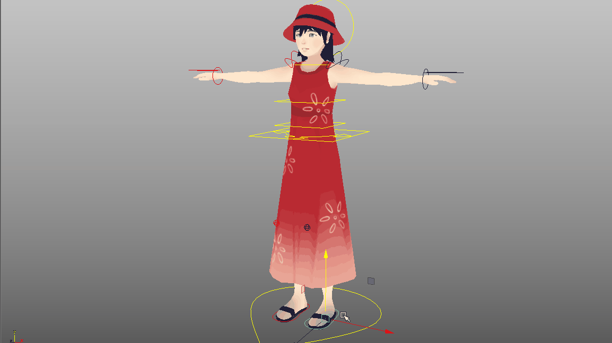
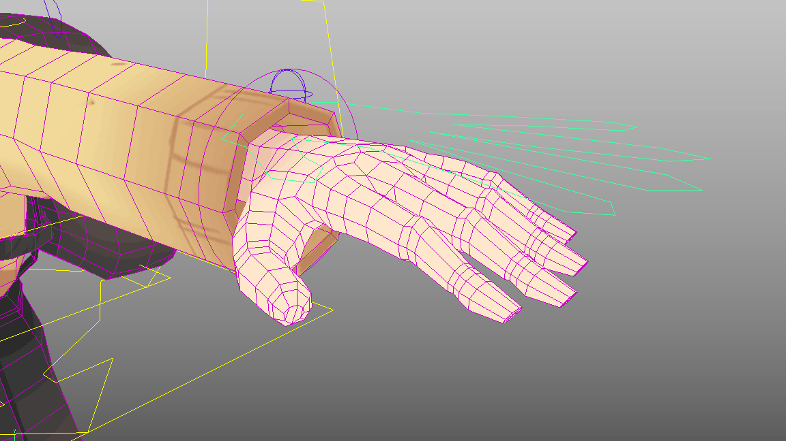

Plasticity
A 2.5D atmospheric puzzle-platformer where you explore a plastic-ridden world, and make choices that either help or harm the environment.
 Showcased at IndieCade 2019 and E3 2019.
Showcased at IndieCade 2019 and E3 2019.Human Character Rigs
I rigged the main character Noa and five other human characters from scratch, including joint and controls setup.

Clothing Rigging
I handled a range of character rigs with different clothes, like the main character's mother Joy and her long sundress.

Driven Key Foot Controls
I set up a range of foot controls like heel-peeling for Noa's run and stumble animations through the uneven wastelands.

Driven Key Hand Controls
I set up hand controls for curling and spreading fingers, sparing our animator the need to key individual finger controls.

Cutscenes
With enough features in our human rigs, Plasticity became the first game in USC Advanced Games Project history to feature cutscenes.
Animal Rigs
I rigged our spotlight animal character, Bucket the Puppy!

Puppy Rig
I skinned a dog skeleton asset to our own puppy model, creating controls and debugging joint orientation issues.

Meet Bucket!
Our animator was able to have a lot of fun with my rig, and Bucket has since gone on to melt quite a few hearts among our players!